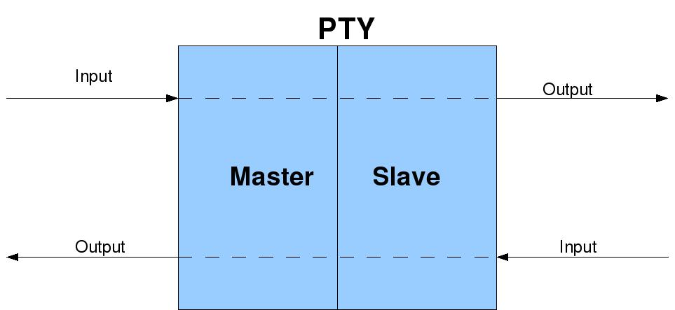
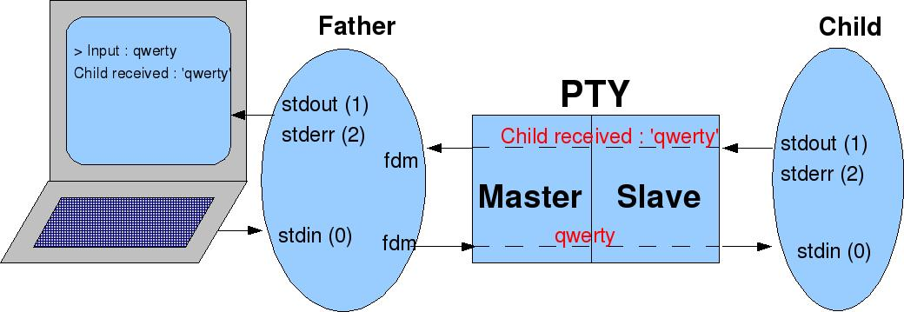
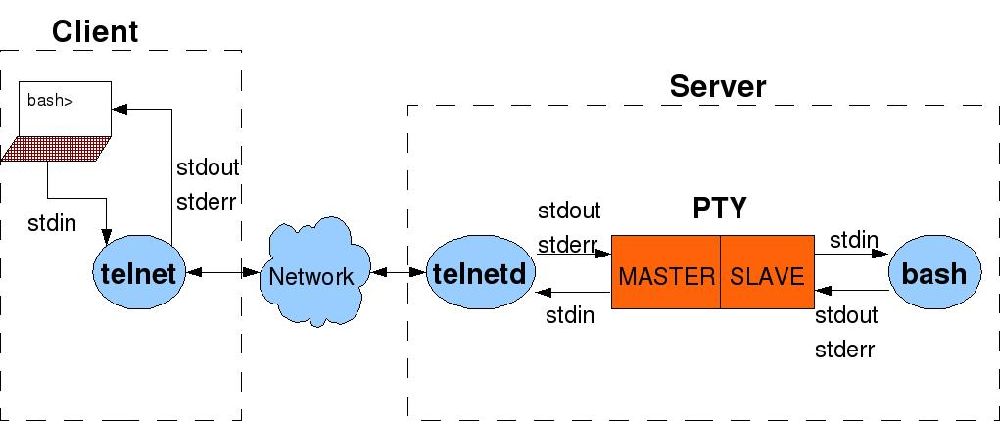
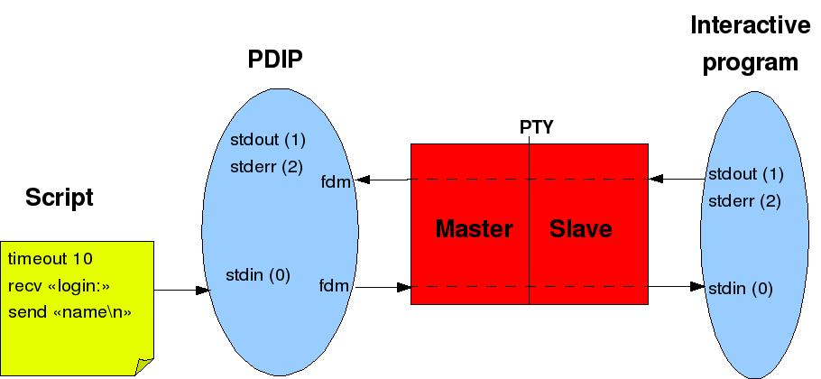

Linux
provides the ability to redirect the standard input and outputs in
order to get data from another source than the keyboard and display
data to another destination than the screen. This feature is very
powerful: a process reads its standard input and writes to its standard
outputs without knowing any details about the devices. In other words,
a program can run without any modifications to read from the keyboard
or a file or the output of another process (
pipe mechanism). It
is the same for the outputs.
Let's consider the following program called
mylogin
which gets a login name and a password:
#include
<stdio.h>
int
main(void)
{
char login_name[150];
char password[150];
// By
default stdin, stdout and stderr are open
fprintf(stdout,
"Login : ");
if
(NULL == fgets(login_name, sizeof(login_name), stdin))
{
fprintf(stderr,
"No login name\n");
return
1;
}
fprintf(stdout,
"Password : ");
if
(NULL == fgets(password, sizeof(password), stdin))
{
fprintf(stderr,
"No password\n");
return
1;
}
fprintf(stdout,
"Result :\n%s%s\n", login_name, password);
return
0;
} |
Under a shell like bash, multiple
solutions are available to make redirections. If we launch the program
as it is, the input is the keyboard and the outputs are the screen.
$
./mylogin
Login
: bar
Password
: foo
Result
:
bar
foo
$ |
The preceding program can be launched as follow to redirect the output
to the file output.txt.
$
./mylogin > output.txt
bar
foo
$
cat output.txt
Login
: Password : Result :
bar
foo
$ |
We can see that without any modifications in the program
mylogin,
it has been possible to launch it to have the standard output
redirected to the screen and then to the file
output.txt.
Problems
while automating interactive programs
A
program as simple as
mylogin can be automated. That is to say that
the human operator can be replaced by a program like a shell script.
Let's consider the file
input.txt
into which we have stored the answers expected by
mylogin.
$
cat input.txt
bar
foo
$ |
We can launch
mylogin with
input.txt as standard input:
$
./mylogin < input.txt
Login
: Password : Result :
bar
foo
$
|
So, we have replaced the human operator
by a file containing the expected entries. Unfortunately, it is not
possible to apply this method to all interactive programs. Some of them
are very elaborated. A program reading a password typically flushes its
standard input right after having displayed the password prompt to get
rid of any characters entered between the login name and the password
prompt (the character echoing is also deactivated during the password
entry). We can illustrate this by making
mylogin
flush its standard input just before the password entry (call to
fseek()).
#include
<stdio.h>
int
main(void)
{
char login_name[150];
char password[150];
// By
default stdin, stdout and stderr are open
fprintf(stdout,
"Login : ");
if
(NULL == fgets(login_name, sizeof(login_name), stdin))
{
fprintf(stderr,
"No login name\n");
return
1;
}
// Flush standard input
fseek(stdin,
0, SEEK_END);
fprintf(stdout,
"Password : ");
if
(NULL == fgets(password, sizeof(password), stdin))
{
fprintf(stderr,
"No password\n");
return
1;
}
fprintf(stdout,
"Result :\n%s%s\n", login_name, password);
return
0;
} |
When interacting with the operator, the program behaves the same (the
keyboard is the standard input).
$
./mylogin
login
: bar
Password
: foo
La
saisie est :
bar
foo |
On the other side, when the standard input is a file, the error message
"No password"
is displayed. Actually, the second call to
fread() gets an end
of file which means that there are no more data on input.
$
./mylogin < input.txt
No password
Login
: Password :
$ |
When the operator interacts, he waits for
the display of the password prompt before entering the password. When
the entry is the file
input.txt,
the
entired
file
is
entered
at
the
beginning
of
the
program.
So,
the
first
line is read with the first call to
fread()
and the
second line is flushed by the call to
fseek().
That's
why
the
second
fread()
encounters an end of file. This is a typical case where the program is
desynchronized with its standard input.
From
this example, we encountered one of the numerous problem we can have
while attempting to automate an interactive program. These kind of
programs also suppose that their standard input and output are
terminals. So, they can trigger some terminal specific operations like
"echo off", "canonical mode", "line mode"... If the input and output
are not terminals but files for example, these operations will fail and
trigger errors in the program.
The pseudo-terminal concept is a solution to those problems.
Introduction
to pseudo-terminals
A pseudo-terminal is a pair of character mode devices also called
pty.
One is master and the other is slave and they are connected with a
bidirectional channel. Any data written on the slave side is forwarded
to the output of the master side. Conversely, any data written on the
master side is forwarded to the output of the slave side as depicted in
figure 2.
Figure
2: Overview of a pseudo-terminal

The
slave side behaves exactly as a standard terminal as any process can
open it to make it its standard input and outputs. So, all the
operations like disabling the echo, setting the line mode or canonical
mode are available.
The master side is not a terminal. It is just a device which permits to
send/receive data to/from the slave side.
In
the Unix world, there are multiple implementation of the
pseudo-terminals. There are the BSD and the System V versions. The
Linux world recommends the system V implementation also called
"Unix 98 pty". This
is the one we are going to study below.
API
of the pseudo-terminals
The API is quite simple:
- posix_openpt()
This call creates the master side of the pty. It opens the
device /dev/ptmx
to get the file descriptor belonging to the master side.
- grantpt()
The file descriptor got from posix_openpt()
is passed to grantpt()
to change the access rights on the slave side: the user identifier of
the device is set to the user identifier of the calling process. The
group is set to an unspecified value (e.g. "tty") and the access rights
are set to crx--w----.
- unlockpt()
After grantpt(),
the file descriptor is passed to unlockpt()
to
unlock the slave side.
- ptsname()
In order to be able to open the slave side, we need to get its file
name through ptsname().
To this API, we can mention the standard API of the terminals:
tcgetattr(),
cfmakeraw()...
The following program called
mypty
uses the API to create a pseudo-terminal.
#define
_XOPEN_SOURCE 600
#include
<stdlib.h>
#include
<stdio.h>
#include
<fcntl.h>
#include
<errno.h>
int
main(void)
{
int
fdm;
int
rc;
//
Display /dev/pts
system("ls
-l /dev/pts");
fdm
= posix_openpt(O_RDWR);
if
(fdm < 0)
{
fprintf(stderr,
"Error %d on posix_openpt()\n", errno);
return
1;
}
rc
= grantpt(fdm);
if
(rc != 0)
{
fprintf(stderr,
"Error %d on grantpt()\n", errno);
return
1;
}
rc
= unlockpt(fdm);
if
(rc != 0)
{
fprintf(stderr,
"Error %d on unlockpt()\n", errno);
return
1;
}
//
Display the changes in /dev/pts
system("ls
-l /dev/pts");
printf("The
slave side is named : %s\n", ptsname(fdm));
return
0;
}
// main |
The programs lists the content of the directory
/dev/pts
at the beginning and at the end to show the creation of the slave side.
In the following example, this is the slave number 4 which is created:
$
./mypty
total
0
crw--w----
1 koucha tty 136, 0 2007-09-25 13:56 0
crw--w----
1 koucha tty 136, 1 2007-09-25 13:32 1
crw--w----
1 koucha tty 136, 2 2007-09-25 12:58 2
crw--w----
1 koucha tty 136, 3 2007-09-25 07:32 3
total
0
crw--w----
1 koucha tty 136, 0 2007-09-25 13:56 0
crw--w----
1 koucha tty 136, 1 2007-09-25 13:32 1
crw--w----
1 koucha tty 136, 2 2007-09-25 12:58 2
crw--w----
1 koucha tty 136, 3 2007-09-25 07:32 3
crw--w----
1
koucha
tty
136,
4
2007-09-25
13:56
4
The slave side is named : /dev/pts/4
$ |
Usage
of the pseudo-terminals
A
pseudo-terminal is mainly used to make a process believe that it
interacts with a terminal although it actually interacts with one or
more processes.
Inter-process
communication through a pseudo-terminal
To point out the pseudo-terminal functions, we can modify
mypty
into
mypty2.
#define
_XOPEN_SOURCE 600
#include
<stdlib.h>
#include
<fcntl.h>
#include
<errno.h>
#include
<unistd.h>
#include
<stdio.h>
#define
__USE_BSD
#include
<termios.h>
int
main(void)
{
int
fdm, fds, rc;
char
input[150];
fdm
= posix_openpt(O_RDWR);
if
(fdm < 0)
{
fprintf(stderr,
"Error %d on posix_openpt()\n", errno);
return
1;
}
rc
= grantpt(fdm);
if
(rc != 0)
{
fprintf(stderr,
"Error %d on grantpt()\n", errno);
return
1;
}
rc
= unlockpt(fdm);
if
(rc != 0)
{
fprintf(stderr,
"Error %d on unlockpt()\n", errno);
return
1;
}
//
Open the slave PTY
fds
= open(ptsname(fdm),
O_RDWR);
//
Creation of a child process
if
(fork())
{
// Father
// Close the slave side of the PTY
close(fds);
while
(1)
{
// Operator's entry (standard input = terminal)
write(1,
"Input : ", sizeof("Input : "));
rc
= read(0, input, sizeof(input));
if
(rc > 0)
{
// Send the input to the child process through
the PTY
write(fdm,
input, rc);
// Get the child's answer through the PTY
rc
= read(fdm, input, sizeof(input) - 1);
if
(rc > 0)
{
// Make the answer NUL terminated
to display it as a string
input[rc]
= '\0';
fprintf(stderr,
"%s", input);
}
else
{
break;
}
}
else
{
break;
}
}
// End while
}
else
{
struct
termios slave_orig_term_settings; // Saved terminal settings
struct
termios new_term_settings; // Current terminal settings
//
Child
// Close the master side of the PTY
close(fdm);
//
Save the default parameters of the slave side of the PTY
rc
= tcgetattr(fds, &slave_orig_term_settings);
// Set raw mode on the slave side of the PTY
new_term_settings
= slave_orig_term_settings;
cfmakeraw
(&new_term_settings);
tcsetattr
(fds, TCSANOW, &new_term_settings);
// The slave side of the PTY becomes the standard input
and outputs of the child process
close(0); // Close standard input (current terminal)
close(1); // Close standard output (current terminal)
close(2); // Close standard error (current terminal)
dup(fds); // PTY becomes standard input (0)
dup(fds); // PTY becomes standard output (1)
dup(fds); // PTY becomes standard error (2)
while
(1)
{
rc
= read(fds, input, sizeof(input) - 1);
if
(rc > 0)
{
//
Replace the terminating \n by a NUL to display it as a string
input[rc
- 1] = '\0';
printf("Child received : '%s'\n", input);
}
else
{
break;
}
}
// End while
}
return
0;
}
// main |
The program consists of two processes. The father reads a string from
the keyboard and writes it on the master side of the
pty. The child
replaced its standard input and outputs by the slave side of the
pty. It reads the
slave side and displays what it received on the slave side prefixed by
"Child received : ".
Here is an example of execution:
$
./mypty2
Input
: azerty
Child
received : 'azerty'
Input : qwerty
Child
received : 'qwerty'
Input
: pwd
Child
received : 'pwd' |
Figure 3
depicts the behaviour of the program when the operator enters "qwerty".
Figure 3:
Description of mypty2

On the slave side we can note the calls to
cfmakeraw() and
tcsetattr() to
reconfigure the slave side of the
pty.
This
sets
the
raw
mode
to
disable
the
echoing
among
other
things.
We can make
mypty2
more generic in order to be able to execute any program
behind the
pty
(slave side). In
mypty3,
the father process writes all the data from its standard input to the
master side of the
pty
and writes all the data from the master side of the
pty to its standard
output. The child process behaves the same as in
mypty2
but executes an interactive program along with its parameters passed as arguments to the program.
We can note the calls to
setsid()
and
ioctl(TIOCSCTTY) to make
the
pty
be the control terminal of the executed program. We can also note the
closing of the
fds file
descriptor which becomes useless after the calls to
dup().
#define _XOPEN_SOURCE 600
#include <stdlib.h>
#include <fcntl.h>
#include <errno.h>
#include <unistd.h>
#include <stdio.h>
#define __USE_BSD
#include <termios.h>
#include <sys/select.h>
#include <sys/ioctl.h>
#include <string.h>
int main(int ac, char *av[])
{
int fdm, fds;
int rc;
char input[150];
// Check arguments
if (ac <= 1)
{
fprintf(stderr, "Usage: %s program_name [parameters]\n", av[0]);
exit(1);
}
fdm = posix_openpt(O_RDWR);
if (fdm < 0)
{
fprintf(stderr, "Error %d on posix_openpt()\n", errno);
return 1;
}
rc = grantpt(fdm);
if (rc != 0)
{
fprintf(stderr, "Error %d on grantpt()\n", errno);
return 1;
}
rc = unlockpt(fdm);
if (rc != 0)
{
fprintf(stderr, "Error %d on unlockpt()\n", errno);
return 1;
}
// Open the slave side ot the PTY
fds = open(ptsname(fdm),
O_RDWR);
// Create the child process
if (fork())
{
fd_set fd_in;
// FATHER
// Close the slave side of the PTY
close(fds);
while (1)
{
// Wait for data from standard input and master side
of PTY
FD_ZERO(&fd_in);
FD_SET(0, &fd_in);
FD_SET(fdm, &fd_in);
rc = select(fdm + 1, &fd_in, NULL, NULL, NULL);
switch(rc)
{
case -1 : fprintf(stderr, "Error %d on
select()\n", errno);
exit(1);
default :
{
// If data on standard input
if (FD_ISSET(0, &fd_in))
{
rc = read(0,
input, sizeof(input));
if (rc > 0)
{
//
Send data on the master side of PTY
write(fdm, input, rc);
}
else
{
if
(rc < 0)
{
fprintf(stderr,
"Error
%d
on
read
standard
input\n",
errno);
exit(1);
}
}
}
// If data on master side of
PTY
if (FD_ISSET(fdm,
&fd_in))
{
rc = read(fdm,
input, sizeof(input));
if (rc > 0)
{
//
Send data on standard output
write(1, input, rc);
}
else
{
if
(rc < 0)
{
fprintf(stderr,
"Error
%d
on
read
master
PTY\n",
errno);
exit(1);
}
}
}
}
} // End switch
} // End while
}
else
{
struct termios slave_orig_term_settings; // Saved terminal settings
struct termios new_term_settings; // Current terminal settings
// CHILD
// Close the master side of the PTY
close(fdm);
// Save the defaults parameters of the slave side of the PTY
rc = tcgetattr(fds, &slave_orig_term_settings);
// Set RAW mode on slave side of PTY
new_term_settings = slave_orig_term_settings;
cfmakeraw (&new_term_settings);
tcsetattr (fds, TCSANOW, &new_term_settings);
// The slave side of the PTY becomes the standard input and
outputs of the child process
close(0); // Close standard input (current terminal)
close(1); // Close standard output (current terminal)
close(2); // Close standard error (current terminal)
dup(fds); // PTY becomes standard input (0)
dup(fds); // PTY becomes standard output (1)
dup(fds); // PTY becomes standard error (2)
// Now the original file descriptor is useless
close(fds);
// Make the current process a new session leader
setsid();
// As the child is a session leader, set the controlling
terminal to be the slave side of the PTY
// (Mandatory for programs like the shell to make them manage
correctly their outputs)
ioctl(0, TIOCSCTTY, 1);
// Execution of the program
{
char **child_av;
int i;
// Build the command line
child_av = (char **)malloc(ac * sizeof(char *));
for (i = 1; i < ac; i ++)
{
child_av[i - 1] = strdup(av[i]);
}
child_av[i - 1] = NULL;
rc = execvp(child_av[0], child_av);
}
// if Error...
return 1;
}
return 0;
} // main
|
Below, we launched
mypty3
with the calculator
bc
as program.
$
./mypty3
Usage:
./mypty3 program_name
$
$
./mypty3 bc
bc
1.06
Copyright
1991-1994, 1997, 1998, 2000 Free Software Foundation, Inc.
This
is free software with ABSOLUTELY NO WARRANTY.
For
details type `warranty'.
3+6
9
quit
Erreur
5 on read master PTY
$ |
It is possible to launch a shell or any
other interactive program. This behaviour applies to numerous famous
programs like xterm, telnet, ftp, rlogin, rsh... For example,
figure 4
depicts the architecture of the telnet program.
Figure 4:
Description of a telnet session

The
telnetd
process is the father process. Its standard input and outputs are not a
terminal but a network connection to a remote
telnet client. The
child process is a
bash
shell. All the data coming from the client through the network
connection is forwarded by
telnetd
to the master side of the
pty.
All
the
data
coming
from
the
bash
shell through the
pty
is forwarded by
telnetd
to the remote client.
Limitation of grantpt()
If we read carefully the online manual of
grantpt(), it is said that "the behavior of
grantpt() is unspecified if a signal handler is installed to catch
SIGCHLD signals". The reason for that can be found by reading its source code in the
GLIBC.
grantpt() can end with a
call to
fork() to execute
chown program while the father (i.e.
the caller of
grantpt()) waits for its termination through
waitpid().
Hence one cannot capture
SIGCHLD signal otherwise the
waitpid() into
grantpt() will fail. Here is an snippet of the end of the source
code of grantpt() :
/* Change the ownership and access permission of the slave
pseudo
terminal associated with the master pseudo terminal
specified
by FD. */
int
grantpt (int fd)
{
[...]
/* We have to use the helper program. */
helper:;
pid_t pid = __fork ();
if (pid == -1)
goto cleanup;
else if (pid == 0)
{
/* Disable core dumps. */
struct rlimit rl = { 0, 0 };
__setrlimit (RLIMIT_CORE, &rl);
/* We pass the master pseudo terminal as file descriptor
PTY_FILENO. */
if (fd != PTY_FILENO)
if (__dup2 (fd, PTY_FILENO) < 0)
_exit (FAIL_EBADF);
#ifdef CLOSE_ALL_FDS
CLOSE_ALL_FDS ();
#endif
execle (_PATH_PT_CHOWN, basename
(_PATH_PT_CHOWN), NULL, NULL);
_exit (FAIL_EXEC);
}
else
{
int w;
if (__waitpid (pid, &w, 0)
== -1)
goto cleanup;
[...]
So, one should disable any
SIGCHLD handler before calling
grantpt() and reenable it right after the call.
Taking
control over an interactive process
mypty3
can be more intelligent by making it interpret a command language to
synchronize with the interactive program. In other words, we could
replace the human operator by a script of commands. This is what a
program like
pdip does.
Presentation
of pdip
pdip
stands for "
Programmed
Dialogue
with
Interactive
Programs".
The acronym PDIP comes from the first lines of the manual of
expect.
Like
expect,
it interprets a scripting language to dialog with an interactive
program as a human operator would do. But it has not all the
bells
and whistles of
expect
which is
able to interact with multiple programs at the same
time, accept a high level scripting language providing
branching
and high level control structures or giving back the control to the
operator during a session.
pdip accepts a
very simple language on the input to provide basic functions such as:
- Filtering the program’s output to catch a string matching a
given pattern
- Sending strings of characters to the program
- Stopping interactions with the program during a given
amount of seconds
As depicted in
figure
5,
pdip
receives as parameter the name of the interactive program to control.
The commands are entered either through the standard input or from a
script passed on the command line.
Figure
5:
Overview
of
pdip

pdip accepts the following commands:
#... # and the
following words up to the end of line are ignored (used for comments)
dbg level
Set the debug level to level. The higher the level, the more traces you get. The value 0 deactivates the debug mode.
timeout x
Set
to x seconds the maximum time to wait on each following
commands (the value 0 cancels the
timeout, this is
the default)
recv "w1 w2..."
Wait
for a line with the pattern w1 w2... from the
program. The
pattern is regular expression conforming to
regex(7).
send "w1 w2..."
Send the string w1
w2... to the program. The string may contain the
following control characters:
\a Bell
\b Backspace
\t Horizontal tabulation
\n New line
\v Vertical tabulation
\f Form feed
\r Carriage return
\" Double quote
\\ Backslash
\[ Escape
\] Group separator
\^ ^ character
sleep x
Stop activity during x
seconds
sig signame
Send the Linux signal
signame to the program. signame is one of: HUP, INT, QUIT, ILL, TRAP,
ABRT, BUS, FPE, KILL, USR1, SEGV, USR2, PIPE, ALRM, TERM.
sh [-s] cmd par...
Launch the cmd par... shell command (synchronously if -s is specified).
exit
Terminate PDIP
Using pdip
Using
pdip is straightforward as we can see with the control of a telnet
client which connects to a host called
’remote’ on the TCP port 34770
with
the login name ’foo’ and password ’bar’.
Since the remote port is specified with an option (-p), it is mandatory
to put a double hyphen (--) before the command to
launch.
Commands are injected on the standard input. We wait for the
’$’ prompt and launch the ls(1) command before
disconnecting from the shell via the exit command.
$
pdip -- telnet -p 34770
remote
recv "login"
send
"foo\n" # Login name is ’foo’
recv "Password"
send
"bar\n" # Password is ’bar’
recv "\$
" # Inhibition of the
metacharacter ’$’ with ’\’
send
"ls\n" # Launch the ’ls’ command
recv "\$ "
send
"exit\n" # Exit from the shell
exit
#
Exit
from
PDIP
$
We
can note that it is mandatory to quote the "$" sign on the recv command
as it is a metacharacter meaning end of line. Here is an example of
execution:
$
pdip -- telnet -p 34770 remote
recv
"login "
Trying
192.0.1.12...
Connected
to remote.
Escape
character is '^]'.
Linux
2.6.22-14-generic (remote) (pts/10)
remote
loginsend
"foo\n"
recv
"Password"
:
foo
Passwordsend
"bar\n"
recv
"\$ "
:
Last
login: Tue Nov 6 20:06:51 CET 2007 on :0
Linux
remote 2.6.22-14-generic #1 SMP Sun Oct 14 23:05:12 GMT 2007 i686
The
programs included with the Ubuntu system are free software;
the
exact distribution terms for each program are described in the
individual
files in /usr/share/doc/*/copyright.
Ubuntu
comes with ABSOLUTELY NO WARRANTY, to the extent permitted by
applicable
law.
foo@remote:~$ send
"ls\n"
recv
"\$ "
ls
DIR2
DOCUMENTS PERSO TODO
Applications
PHOTOS VIDEOS
foo@remote:~$ send
"exit\n"
exit
|
Resources
[1] man 7 pty
[2] man 7 regex
[3]
Programmed Dialogues with Interactive Programs (
PDIP)
[4] Utilisation des pseudo-terminaux pour piloter les programmes
interactifs -

(in french)
[5]
lpty - PTY control for Lua
About the
author
The author is an engineer in computer sciences located in France. He
can be contacted
here or
you can have
a look at his
WEB
home page.